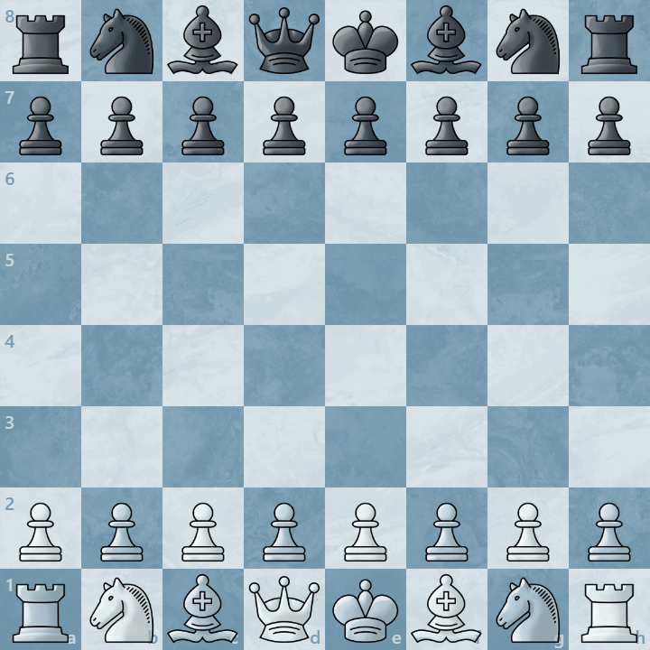

Chess Engine¶
Describe in One Sentence¶
An AI or an algorithm that plays chess VERY WELL.
Introduction¶
A chess engine is a program designed to play chess or analyze chess.
Unlike human chess players,it doesn't "think" or "understand" chess like we do. Instead, It represents the board using data structures, generate legal moves, search for future possibilities, and evaluate positions using math.
How it works?¶
There are basically two kinds of engine. One uses alpha-beta search and hand-made evaluation algorithms, the other uses Monte Carlo search and neural nets to play chess.
Alpha-beta Search + Hand-made Evaluation¶
Traditional chess engines, such as Stockfish, use search algorithms and evaluate algorithms to play chess.
For a board like the picture below:

(The picture comes from chess.com.)
It will generate moves, which means the engine will play every possible moves in its mind:

(The picture comes from chess.com.)
And evaluate them to analyze which move is the best.
Although the GIF only represents every move we can play as white, but the engine does not only search for these moves. The engine will also search from the board when the previous move has made, which means:

(The picture comes from chess.com.)
There are 20 branches from the starting position of chess, and the engine will search like:

(The picture comes from chess.com.)
Just like a tree, that is how the engine will recurse itself and keep searching.
As for what alpha-beta search really is, please see alpha-beta search.
Monte Carlo Search + Neural Nets¶
(Due to the main subject of this project is for traditional search engines, thus this part might be inaccuate.)
AI-based engines, such as Lc0, uses policy and value based priority search and neural nets to play chess.
What does Monte Carlo search do? First, it will search as similar as the alpha-beta search above.
Then, every board position will return a policy list and a value, which means how good a move generated from the current position is, and how good the position is.
This information is generated from the nerual network, thus it searches slower than the traditional search engines, but it looks farther than them.
Combination?¶
A technique called Efficiently updatable neural network was invented in around 2018. It is a neural net but it can update fast, which means it is stronger than hand-made evaluation algorithms. Thus it has been used in almost every top chess engines.